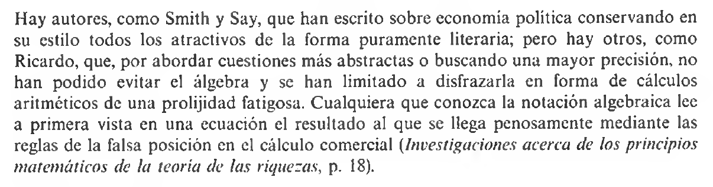
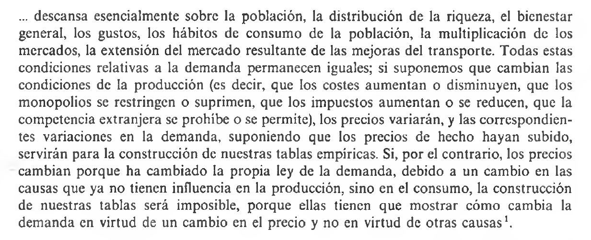
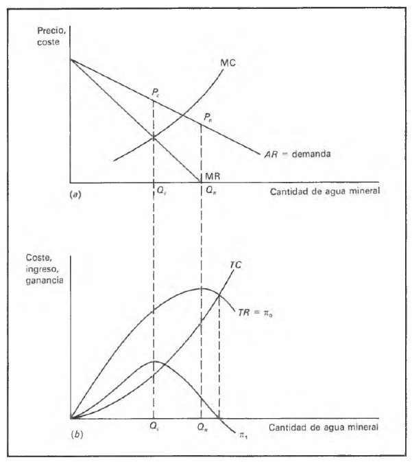
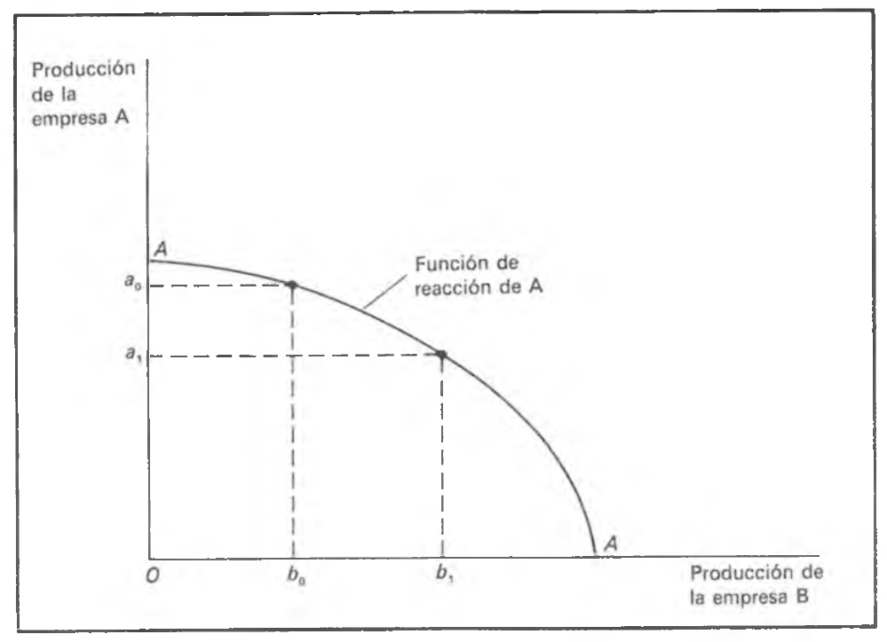
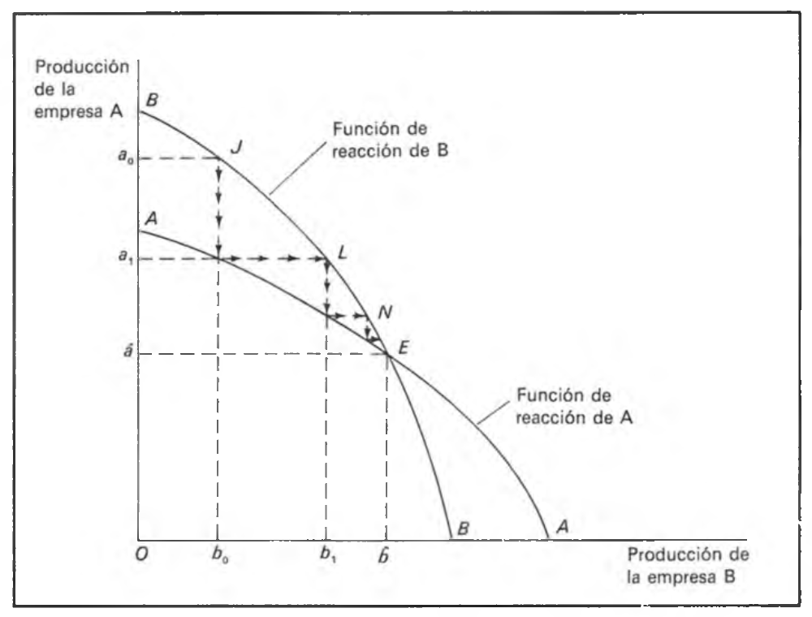
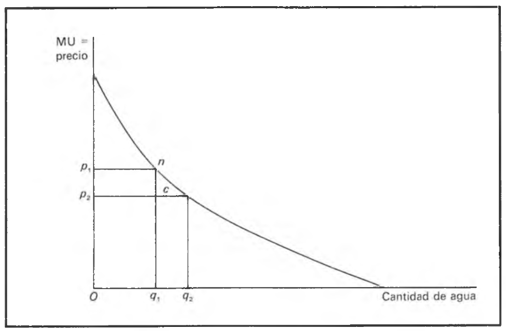
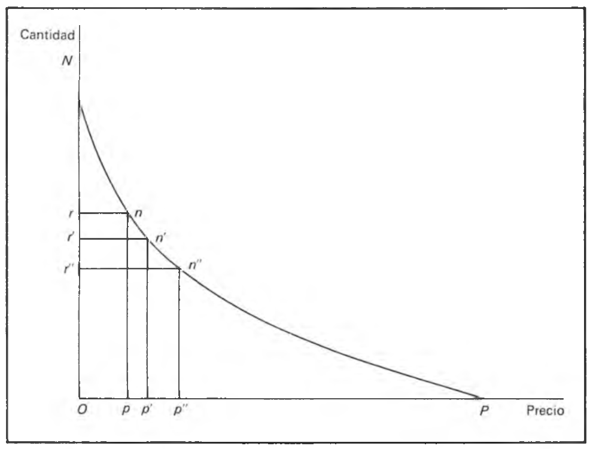

Historia del Pensamiento y del Análisis Económico
U6. La escuela neoclásica. La revolución marginalista. Antecedentes y precursores
Más alla de Inglaterra: los “microeconomistas” franceses
Cambio de foco y variantes continentales
- La escuela clásica inglesa fue la primera que, en su conjunto, utilizó métodos formales y abstracción guiada por la lógica deductiva para estudiar fenómenos económicos
- Pero la difusión de las ideas clásicas pronto impactaría positivamente sobre el surgimiento de análisis económico en el continente, Francia y Austria fueron dos ejemplos de ello
- Pero a diferencia de las preocupaciones de la escuela clásica inglesa –la renta, el producto, la población y el crecimiento- el foco del análisis estuvo en la microeconomía
- precios, cantidades, y estructuras de mercado
La irrupción del análisis microeconómico
- Se realizaron avances en temas de finanzas públicas y economía del bienestar; sobre decisiones de localización y costos de transporte;
- Además se sentaron las bases sobre las cuales se desarrollan las teorías de discriminación de precios y de diferenciación del producto
- Y fundamentalmente se terminó de cerrar definitivamente el problema del valor con la contribución fundamental de la teoría de la utilidad de Jevons
- Comencemos ahora con las contribuciones de los “ingenieros” franceses que dieron un particular impulso a la introducción del análisis microeconómico
Antoine-Agustin Cournot [1801-1877]: Vida
- Una mente muy original, estudió matemática en la Ecole Normale de París y su doctorado en la Universidad de Paris y tuvo contacto fluido con físicos e ingenieros
- Gracias a su amistad con Poisson (si, el de la distribución!) se aseguró posiciones docentes y de gestión académica –
- Su voraz apetito por la lectura científica le causaron una ceguera progresiva que influyó sobre la calidad de su trabajo
- su principal contribución está en el libro Recherches sur les principes mathématiques de la théorie des richesses
- Murió casi en la más absoluta anonimidad en relación a su trabajo y contribución –salvo Walras.
Cournot [1801-1877]: Sobre el método
- Valoró y abogó por el uso de las matemáticas como procedimiento abreviado para expresar ideas complejas
- Pero también decía que su principal uso no era para lograr cálculos numéricos sino “para encontrar relaciones entre magnitudes, entre funciones” –relativizaba el rol de lo empírico en el proceso de la ciencia
- Cournot descubre “la ley de la demanda”, \(D=F(P)\) \(\longrightarrow\) Cournot comprendió perfectamente el supuesto ceteris paribus
Cournot [1801-1877]: Sobre el método (cont.)
Figure 1: En defensa de las matemáticas
Cournot [1801-1877]: Sobre el método (cont.)
Figure 2: El supuesto ceteris paribus
Cournot [1801-1877]: Sobre el método (cont.)
- Rechazó la utilidad como fundamento de su función de demanda, hace una aproximación empírica a la misma \(\longrightarrow\) “la venta, o la demanda…crece en general cuando el precio desciende”
- Su especificación teórica –\(D\) continua y con pendiente negativa- se deduce de la observación y de simplificaciones; pero la teoría se eleva por encima de los hechos y puede usarse para hacer deducciones y generalizaciones
- Como puede notarse, Cournot fue muy lúcido en cuanto a formulación de teorías y construcción de modelos
Cournot [1801-1877]: los modelos microeconómicos
- Usó estos metódos y teorías para crear modelos de comportamiento de la empresa. Entre ellos, dos de sus modelos más importantes fueron: 1) modelo del monopolio, 2) modelo del oligopolio
- El primero es el modelo del manantial de agua y analiza el problema de la maximización del beneficio del productor
- El segundo es tal vez la más famosa de sus teorías, el famoso modelo de duopolio de Cournot donde introdujo un vendedor adicional a su modelo de monopolio
Cournot [1801-1877]: el monopolio
- El monopolista cobra un precio \(p\) tal que el ingreso total \(pF(p)\) sea máximo –cuando \(CM=IM\). Si costos son nulos, el máximo es cuando el \(IM=0\)
- Recuerdo que \(\Pi=TR-TC\) \(\longrightarrow\) si \(TC=0\) entonces \(\Pi=TR\) –el monopolista con costos nulos vende más \(q\) que el monopolista de costos positivos [\(Q_{n}>Q_{c}\)
- Es decir, vende cuando maxizima sus ingresos brutos –que fue la gran demostración de Cournot
- el caso de costos positivos revela el “principio marginalista” \(\longrightarrow\) \(MC=MR\)
Cournot [1801-1877]: el monopolio (cont.)
Figure 3: Monopolio: costos positivos y nulos
Cournot [1801-1877]: el duopolio
- Consideró ahora dos vendedores \(A\) y \(B\) que conocen la curva de demanda agregada de su producto
- Cada uno de ellos supone que la decisión del otro en relación a mantener/aumentar la \(q\) es independiente de lo que haga uno
- Supuso además que \(A\) y \(B\) (cada uno) podían suministrar toda el agua demandada. Nuevamente supone que la producción no tiene costo
- Su gran contribución original fue la (hoy) famosa curva (función) de reacción
Cournot [1801-1877]: el duopolio (cont.)
Figure 4: La función de reacción
Cournot [1801-1877]: el duopolio (cont.)
Función de reacción. Es una funcíon que representa los niveles de producción \(q_{A}\) que elige A para maximizar sus beneficios dada la eleccion de producción \(q_{B}\) que elige B. Es decir A tiene un plan de producción para cada nivel de producción de B. Además A piensa que la cantidad que fija B será permanente. ¿Cómo se determina los niveles de \(q_{A}\) y \(q_{B}\)? Juntando la función de reacción de A y B. Si B decidiera producir \(Ob_{0}\) y A mantendrá su producción en \(Oa_{0}\), entonces B maximizaría sus beneficios. El punto importante es que B (y A) tienen incentivos a aumentar la producción (suponiendo que el otro la mantiene). Este supuesto como puede notarse es bastante cuestionable.
Cournot [1801-1877]: el duopolio (cont.)
Figure 5: Funciones de reacción y determinación de \(q\)
Cournot [1801-1877]: el duopolio (cont.)
- El punto \(E\) representa el equilibrio y es estable –una posición a la que regresan sin por alguna razón no estuvieran
- En este punto, los duopolistas se reparten el beneficio y cargan el mismo precio –más bajo que el que cargarían en monopolio pero más alto que el de competencia
- Fue muy preciso respecto de las relaciones entre cantidades vendidas en monopolio, duopolio y competencia
Cournot [1801-1877]: evaluación
- Si bien su fama se debe al modelo de duopolio, nos dejó muchas otras intuiciones
- Sus modelos de monopolio y duopolio fueron sujeto de muchas críticas –supuesto de inacción ante cambios en el precio del otro[Bertrand, Edgeworth]. Incluso ante la evidencia repetida disponible
- Aún así, este modelo dio pie a una muy fructífera linea de investigación en economía en relación a la interdependencia estrategica y la variación conjetural –i.e. supuesto de como reacciona un vendedor a las acciones del otro
Jules Dupuit [1804-1866]: vida
- Fue en paralelo a la figura de Cournot, el otro estandarte del análisis microeconómico en Francia. Al igual que Cournot, concebía la economía como una vocación y no como profesión
- Estudió ingenieria en prestigiosos centros educativos –tuvo una ilustre carrera como ingeniero sobre todo como gestor y director- y se interesó por la economía
- Sus contribuciones a la economía no fueron de menor calibre aunque la mayoría encontradas en revistas y no en libros
Jules Dupuit [1804-1866]: sobre el método
- Escribió casi en paralelo con Cournot pero sin conocerse ni leerse – su método guardaba relación con el de Cournot dado que para el la economía política era una ciencia combinada entre razón y observación
- En efecto combinó 3 (tres) elementos:
- temas de interes y relevancia economica
- hechos relevantes observados y estadísticas
- análisis matemático –lógica deductiva y análisis gráfico
- Asi las teorías concebidas se contrastarían con nuevos datos y actualizarían
Jules Dupuit [1804-1866]: utilidad marginal y demanda
- Fue el primer economista que presentó una discusión del concepto de UM y lo relacionó con la curva de demanda (en 1844).
- argumentó que la utilidad que un individuo obtiene de un stock de bienes se determina por el uso a que se destinan las últimas unidades del stock
- Jevons reconoció honorablemente que Dupuit era quien debía ser “credited with the earliest perfect comprehension of the theory of utility”
- Todo consumidor “atribuye una utilidad diferente al mismo objeto, según la cantidad que consume”
- Elaboró un ejemplo con el uso de cantidades crecientes de agua y lo vinculó con las bajas en el precio
Jules Dupuit [1804-1866]: utilidad marginal y demanda
Si el precio se redujese en 20 francos, el individuo demandaría 4 hectolitros para poder limpiar su casa todos los días; si se la dan a 10 francos, pedirá 10 hl., para poder regar su jardín; a 5 francos, pedirá 20 hl. para instalarse una fuente; a 1 franco, pediría 100 hl. para disponer de una corriente continua y así sucesivamente. Es la necesidad menos apremiante que se siente de una mercancía, no la más apremiante, lo que define el valor de cambio de todo el stock de bienes.
Jules Dupuit 1804-1866]: utilidad marginal y demanda (cont.)
Figure 6: Cantidad y utilidad marginal (precio)
Jules Dupuit [1804-1866]: utilidad marginal y demanda
- Partiendo de equilibrio del consumidor en punto \(n\), si el \(p\) del agua baja a \(p_2\), el individuo no está en equilibrio en el punto \(c\) al nuevo precio –la UM de la última unidad del stock de que dispone, \(q_1\) es mayor que la UM del agua representada por un precio menor
- En otras palabras, lo que el consumidor pagaría por una cantidad \(q_1\) de agua es mayor que el precio que debe pagar por esa cantidad \(q_1\)
- la curva de UM es la curva de demanda de Dupuit!
Jules Dupuit [1804-1866]: utilidad marginal y demanda
Si en una tabla de dos columnas se colocan en la primera todos los precios, desde 0, al que le corresponde un mayor consumo, hasta el precio al que ya no se consume nada; y en la segunda, en relación con cada precio, se coloca la correspondiente cantidad consumida, tendremos la representación exacta de lo que llamamos la ley del consumo [Jules Dupuit, Dictionnaire de l’economie politique]
Jules Dupuit [1804-1866]: utilidad marginal y demanda
Figure 7: La curva de demanda
Jules Dupuit [1804-1866]: utilidad marginal y demanda
- Expresaba la curva de demanda como \(Q_d=f(p)\) y colocó la variable independiente en el eje de las \(x\) y la depediente en el eje de las \(y\) –quien rompió con esto fue Alfred Marshall porque el trató al precio como función de la cantidad
- Al vincular la curva de demanda con la teoría de la utilidad básicamente funda la economía del bienestar
- En su grafico distingue las areas delimitadas por el precio que efectivamente pagan y la que está por encima del precio pagado le llama “utilidad que queda a los consumidores”
Jules Dupuit [1804-1866]: otras contribuciones
- También realizó grandes contribuciones en las áreas de monopolio y discriminación de precios \(\longrightarrow\) estudia factores detrás de formación de precios de monopolio [i.e. compañías ferroviarias]
- Comparó los precios de alquileres versus tarifas ferroviarias –los primeros no podrían mantenerse altos por mucho tiempo porque operaría la movilidad de \(K\) hacia la industria más rentable –entrada y salida de empresas previene el monopolio a largo plazo
- Pero no existía tal cosa como libre entrada en la industria ferroviaria sujeta a ciertas caraterísticas especiales: 1) escala/costos, 2)
Jules Dupuit [1804-1866]: otras contribuciones (cont.)
- Exploró el comportamiento del monopolista –regla de maximización del beneficio –el rendimiento/beneficio bruto en caso de costos cero y el rendimiento/beneficio neto en caso de costos (variables) positivos
- Pero su teoría la realizó en terminos del beneficio neto
- También destacó otro elemento que tomaría Marshall \(\longrightarrow\) relacionó el ingreso del monopolista con el excedente del consumidor
- Finalmente la discriminación de precios posibilitaría aumentar/disminuir via políticas de discriminación de precios
Jules Dupuit [1804-1866]: otras contribuciones (cont.)
Figure 8: Monopolio con discriminación
Jules Dupuit [1804-1866]: otras contribuciones (cont.)
- Si \(OM\) es el precio que maximiza el beneficio, \(OMTR\) es el ingreso del monopolista, \(TMP\) el excedente de los consumidores, y \(RTN\) la utilidad perdida.
- Ahora si el monopolista aumenta cantidad hasta \(Or\) y la utilidad total –suma de excedente de consumidores y el ingreso del monopolista- sería igual a \(OPnr\) que es mayor que \(OPTr\) (por \(RTnr\))
- El beneficio del monopolista aumenta –en \(Mp'n'q'\)+\(Rqnr\); la utilidad total no cambia pero se distribuye hacia adentro (ganan \(O\), pierden \(D\))
Jules Dupuit [1804-1866]: otras contribuciones (cont.)
- Finalmente, realizó contribuciones en el análisis beneficio-costo munido de su descubrimiento de la curva de \(UM\)
- La regla general era que el gobierno debía proveer los bienes si tal que el costo anual pudiera cubrirse dejando alguna “utilidad neta” –es decir, si \(IM=CM\)
- Distinguió entre un monopolio privado (discriminación total) y uno gestionado por el gobierno (discriminación restringida) \(\longrightarrow\) es decir podría decidir maximizar el excedente de los consumidores
- esto no sería posible con un monopolista privado
- En esto hubo un tímido interés por el tema de la distribución de la renta
Resumen de las contribuciones
- Fueron ingenieros y economistas franceses quienes primero se acercan a formalizar la teoría de la empresa \(\longrightarrow\) análisis de maximización del producto y beneficio (Cournot) en diferentes estructuras junto a las teorías de la utilidad y bienestar (Dupuit)
- Recordatorio que muchas veces ideas novedosas fueron “pasadas por alto” por la corriente principal –note las fechas en que escribieron
- Nota de caución en relación a la sobreespecialización disciplinar y la importancia de abrir la investigación disciplinar no sólo a otras metodologías, disciplinas y enfoques
La escuela austríaca de Viena
De Alemania a Austría: raíces del análisis marginalista
- Cuando se habla de ela escuela de Viena, hay 3 nombres principales que vienen a la mente: Carl Menger, Friedrich Wieser y Eugene Böhm-Bawerk
- entre ellos instalaron una aproximación sistemática y científica al análisis económico
- En paralelo pero influenció e influenciada por la corriente principal (escuela neoclásica inglesa)
- toda una tradición de autores famosos se han formado en esa tradición [Schumpeter, von Mises, Hayek, Machlup, Haberler y Morgernstern]
Precursores de la escuela de Viena
- Algunos autores alemanes y austríacos presagiaron lo que estaba por venir, aunque tuvieron contribuciones acotadas y aisladas. Ellos fueron:
- von Thünen (1783-1850) \(\longrightarrow\) influyó en Marshall a través del principio equimarginal. Pionero de la teoría económica de la localización espacial –a diferencia de Ricardo priorizó diferencias de localización y no de productividad
- Gossen (1810-1858) \(\longrightarrow\) buscó matematizra el cálculo hedonístico de Bentham y tuvo influencia en Jevons ya que fue el primero que formuló el principio fundamental de la teoría de la utilidad marginal
- von Mangoldt (1824-1868) \(\longrightarrow\) un teórico liberal que estudio con Roscher (EHA) y estudió dos temas centrales: 1) teoría del beneficio y papel del empresario; 2) teoría subjetiva del valor
Precursores de la escuela de Viena (cont.)
A person maximizes his utility when he distributes his available money among the various goods so that he obtains the same amount of satisfaction from the last unit of money (Geld-atom) spent upon each commodity [Heinrich Gossen, Entwickelung der Gesetze des menschlichen>> Verkhers (1927)]
- En otras palabras, \[\begin{equation} \frac{MU_{1}}{p_{1}}=\frac{MU_{2}}{p_{2}}=\frac{MU_{3}}{p_{3}}=... \end{equation}\]
Carl Menger [1840-1921]
- Carl Menger nació en Polonia en 1840, en aquel entonces parte del imperio austro-húngaro. Estudió derecho en la Universidad en Viena, Praga y Cracovia donde se doctoró.
- Su primer y más importante libro Principios de economía política (1871) le abrió las puertas del mundo académico y de la vida pública
- Menger no escribió en una tradición académica típica ; el contraste con los otros autores marginalistas es notable
- su objetivo no era construir una teoría económica y mucho menos usar lenguaje matemático (de hecho era escéptico sobre esto y lo hizo saber)
Carl Menger [1840-1921]: el líder
- Sus principales influencias fueron de la escuela historicista
- Fue el líder de una verdadera revolución teórica en el pensamiento \(\longrightarrow\) además de un fenomenal polemista verbal (su blanco predilecto fue el historicismo aleman)
- Su idea era aportar una construcción que trascendiera la simple descripción de los fenómenos económicos manteniendo fuertes vínculos con la realidad empírica
- de hecho “dedicó” sus Principios a Wilhelm Roscher uno de los máximos exponentes de la “vieja” escuela histórica alemana.
El subjetivismo de Menger
- En las universidades austro-alemanas, reinaba el enfoque subjetivo de la teoría del valor basado en comparación entre oferta y demanda, valor de uso y escasez [recuerde que esta tradición tenía sus raíces en las viejas scolas medievales]
- Este enfoque rechazaba de plano la teoría ricardiana del valor-trabajo [no así la teoría de la renta diferencial o la teoría del crecimiento de Smith basada en la división del trabajo]
El subjetivismo de Menger (cont.)
- Su obra seguía una estructura típica de la tradición alemana
- análisis exhaustivo de bienes y necesidades lleva a la teoría del valor, intercambio y precio
- de ahi seguía a temas como distribución, desarrollo y dinero
- A diferencia de Jevons y Walras, Menger definía la actividad económica como una búsqueda de conocimiento y poder
- su objetivo era analizar relaciones causales entre bienes y valores humanos
- Distinguió entre bienes y bienes económicos
El subjetivismo de Menger (cont.)
Bienes no económicos (tout-court, libres) y bienes económicos. Los bienes no económicos no tienen valor –no solo valor de cambio, sino también de uso. La diferencia entre ambos tiene que ver con la disponibilidad (escasez).
Respecto de aquellos bienes cuya cantidad disponible es superior a las necesidades queda excluida la actividad económica de los hombres de la misma natural y necesaria manera en que aparece cuando los bienes se hallan en la relación cuantitativa opuesta. No constituyen en el primer caso objetos de la economía humana y, por ende, los llamamos bienes no económicos [Carl Menger, Principios de economía política (1871), pp. 154]
El subjetivismo de Menger (cont.)
- Y sigue:
Si la cantidad disponible de bienes económicos aumenta constantemente, hasta que acaban por perder su carácter económico, entonces ya no hay carencia de los mismos y salen del círculo de aquellos bienes que forman parte de la riqueza de los hombres económicos, es decir, de los círculos de aquellos bienes de los que hay carencia parcial [Carl Menger, Principios de economía política (1871), pp. 167]
El subjetivismo de Menger (cont.)
- Entre las características del pensamiento de Menger estaban
- valoración que hace cada individuo de su propia situación
- individualismo metodológico
El valor viene dado por la manera en que los seres humanos aprecian la distinta importancia de sus diversas necesidades y la adecuación de los distintos bienes a la satisfacción de tales necesidades
El subjetivismo de Menger (cont.)
- En otras palabras, las necesidades se clasifican según orden de importancia y suponía que la intensidad de cada una disminuía progresivamente al satisfacerla. Debía alcanzarse un cierto grado de satisfacción de la necesidad más apremiante antes de abordar la que seguía en orden de importancia.
- Para determinar el valor pues se requería además de considerar el valor de uso de los bienes también la escasez \(\longrightarrow\) determinaba la medida en que podían satisfacerse las necesidades
- por tanto su valoración no tenía que ver con la importancia absoluta de cada necesidad sino con su importancia en el margen
El subjetivismo de Menger (cont.)
- La valoración se hacía directamente en el caso de los bienes de consumo (bienes de primer orden) e indirectamente en el caso de los bienes de producción (bienes de segundo, tercer…orden)
- en este último caso a los bienes de producción se les imputaba una parte del valor que tenía el bien producido para el consumidor y se calculaba esta parte en proporción a la contribución realizada por el bien o servicio al proceso productivo –i.e. la teoría de la imputación de Menge
- Note como el consumidor es soberano en el sistema económico de Menger –es el primum movens.
- sentido positivo y normativo –fundamentalmente para justificar liberalismo económico y dejar libre de toda interferencia
El subjetivismo de Menger (cont.)
{kind=link}
El subjetivismo de Menger (cont.)
- Existían tipos/clases de bienes (mercancías) –indexados por números romanos de menor a mayor según su condición de esencial. Además, con números arábigos se representaban las utilidades a medida que se consumía más cantidad de cada bien
- Si el agua es el bien I y los diamantes son el bien VIII y suponga que un consumidor ha consumido 8 unidades de agua y ninguna de diamantes, la \(UMg\) de una unidad de agua adicional es de sólo 2 pero la de diamantes (primera unidad) es de 3.
- La utilidad total del agua, \(UT\), es la suma de las \(UMg\) es claramente mayor que la de los diamantes; y sin embargo la \(UMg\) de los diamantes es mayor que la de agua
El subjetivismo de Menger (cont.)
El precio de los diamantes es mayor que el precio del agua porque es la utilidad marginal (UMg) la que determina la elección del consumidor y no la utilidad total, y por tanto, es la que determina el precio.
El subjetivismo de Menger (cont.)
- Aunque prevaleció en su análisis el elemento subjetivo, evitó usar el término utilidad y se refirió a importancia de satisfacciones
- Sobre el valor de cambio \(\longrightarrow\) partió del intercambio en un monopolio bilateral (entre dos individuos)
- vio el intercambio como un tema de valores desiguales (a diferencia del valor de cambio como dificultad de producción) que implica una ventaja para ambos participantes
- Generalizó a casos de mas de dos mercancías y dos individuos
Valoracion y contribuciones de Menger
- Su análisis fue menos riguroso e inferior en términos técnicos a los de Walras y Jevons pero su contribución fue la de resaltar elementos de conocimiento humano e incertidumbre que son claves en las decisiones de los agentes económicos
- Menger parecía más interesado en aspectos dinámicos (cambio, evolución); el desarrollo original de la propiedad privada; y modo como los agentes buscan aumentar su conocimiento y modificar sus preferencias
Valoracion y contribuciones de Menger
- Destacó la existencia de costos de transacción –resalta el papel de los intermediarios –ayudan a mayor conocimiento- y al dinero –la mercancía más facilmente comercializable.
- El proceso de civilización para Menger se da con la reducción de la ignorancia y el desarrollo de instituciones que ayudan a los individuos a enfrentarse con la incertidumbre
- de hecho el dinero, el mercado, la división del trabajo eran vistos como efectos no deseados de elecciones individuales descoordinadas
La methodenstreit
- El historicismo se oponía por naturaleza al universalismo, es decir, la pretensión que es posible deducir reglas de validez en todo tiempo y lugar. En su gran mayoría en lo político, defendían el Estado absoluto y el nacionalismo económico.
- La vieja escuela histórica alemana veía a la economía como la ciencia que estudia las leyes naturales del desarrollo económico sin oponerse al enfoque de la escuela clásica inglesa.
- Menger no veí oposición ni conflicto alguna entre su teoría y los postulados de la vieja EHA
- Sin embargo la nueva escuela histórica alemana tuvo opiniones más radicales \(\longrightarrow\) se oponía a las deducciones teóricas abstractas y rechazaba separación entre economía y política
La methodenstreit (cont.)
- Surgió así la methodenstreit o “batalla de los métodos”, una famos disputa entre Menger y Schmoller \(\longrightarrow\) Menger defendía la naturaleza atomística y subjetiva de la economía
- las ideas colectivas y agregadas no podían tener una fundamentación adecuada
- Schmoller en cambio defendía el método histórico \(\longrightarrow\) única forma de considerar instituciones dinámicas
- criticaba el foco en comportamiento individual (“individualismo metodológico”) bajo fuertes restricciones
- Eventualmente la disputa se zanjó para el lado austríaco y parte de la razón fueron los Principios de Menger
La methodenstreit (cont.)
- Menger distinguía tres componenentes de la economía política:
- el aspecto histórico-estadístico
- la teoría
- la política económica
- Le atribuía un rol especial a la teoría –proponía un enfoque causal-genético: partir de elementos simples para llegar a leyes compuestas
- la economía política llegaba a “leyes exactas” pero sólo sobre un subconjunto de las acciones humanas [insistía con énfasis en que la nocíon de hommo economicus era una construcción ficticia]
- Proponía una íntima conexión entre teoría y realidad como mencionamos antes
La teoría de la utilidad marginal
La teoría de la utilidad marginal
- La teoría de la utilidad finalmente empezó a ganarse un lugar en la economía aceptada y consensuada en los años 1870s de la mano del tríptico de autores que desarrollaron (versiones similares de) la teoría de manera independiente y descoordinada \(\longrightarrow\) Jevons, Menger y Walras
- Cada uno de ellos criticó el “canon ricardiano” de la teoría del valor pero esto fue generalmente en segundo plano –cada uno de ellos creía que la teoría de la utilidad marginal tenía mérito suficiente para ser aceptada
La crítica a Ricardo
- Jevons identificó varias deficiencias en la teoría ricardiana
- Ricardo requería una teoría especial para bienes con oferta fija (estatuas, pinturas) –esto sugería que el costo del trabajo no era esencial al valor
- Altos costos de trabajo no darán alto valor a una mercancía si la demanda futura es erroneamente estimada
- El trabajo es heterogéneo y los diferentes tipos de \(L\) sólo pueden ser comparados a través de los valores de sus productos
- Además sugirió que la teoría del valor del costo de producción encaja bien como un caso especial de la teoría de la utilidad \(\longrightarrow\) explica la cantidad relativa de mercancías que será provista
La crítica a Ricardo (cont.)
- Menger y Walras tomaron esencialmente la misma posición. Menger particularmente añadió una crítica a la teoría de la renta \(\longrightarrow\) si el valor de la tierra no dependía de los costos de trabajo, esto demostraba una falta de generalidad bastante seria de la teoría clásica del valor (TCV) [misma crítica de Walras]
- Ademas Walras enfatizó los efectos recíprocos de precios de bienes y factores entre sí y negaba la existencia de bienes que cuya oferta podía ser incrementada inifitamente
- Quienes se encargaron de “hipear” la teoría de la utilidad marginal y relativizar la “utilidad” de la TCV fueron dos discípulos que, según Stigler, poco contribuyeron a la teoría de la utilidad marginal: Wieser y Böhm-Bawerk
La mensurabilidad de la utilidad
- Los tres autores aceptaron la utilidad como un hecho de la experiencia común congruente con cualquier introspección casual
The science of Economics, however, is in some degree peculiar, owing to the fact…that its ultimate laws are known to us immediately by intuition, or, at any rate, they are furnished to us ready made by other mental or physical sciences. …The theory here given may be described as the mechanics of utility and self-interest. Oversights may have been committed in tracing out its details, but in its main features this theory must be the true one. Its method is as sure and demonstrative as that of kinematics or statics, nay, almost as self-evident as are the elements of Euclid… [William Stanley Jevons, Theory of Political Economy (1911)]
La mensurabilidad de la utilidad (cont.)
- Menger fue tal vez el mayor militante y apologista de la mensurabilidad de la utilidad
- representó la \(UM\) a través de números y empleó el mecanismo de la igualación de \(UM\) en varios usos para determinar asignación de una mercancía
- Walras también supuso la existencia de una unidad de medida de la utilidad y eventualmente hablaba en términos de la utilidad como un magnitud absoluta
- Pero Jevons fue más enérgico y confuso \(\longrightarrow\) la utilidad para él no era mensurable
- sin embargo, su rechazo fue mutando a escepticismo y eventualmente sugirió un método ingenioso para “medir la utilidad”
La mensurabilidad de la utilidad (cont.)
There is no unit of labour, or suffering, or enjoyment. I have granted that we can hardly form the conception of a unit of pleasure or pain, so that the numerical expression of quantities of feelings seems to be out of question [William Stanley Jevons, Theory of Political Economy (1911)]
La mensurabilidad de la utilidad (cont.)
- En la segunda edición del libro argumenta muestra más escepticismo y borra varios pasajes críticos de la mensurabilidad
- Luego dice que no le interesa medir “the whole pleasure gained” sino más bien comparar placeres de cantidades incrementales de tener mas de algo en relación al precio monetario pagado
La mensurabilidad de la utilidad (cont.)
It is from the quantitative effects of the feelings that we must estimate their comparative amounts. I never attempt to estimate the whole pleasure gained by purchasing a commodity; the theory merely expressed that, when a man has purchased enough, he would derive equal pleasure from the possession of a small quantity more as he would from the money price of it [William Stanley Jevons, Theory of Political Economy (1911)]
La mensurabilidad de la utilidad (cont.)
- Relaciona ingeniosamente demanda con utilidad marginal a partir de la siguiente formula
- Argumenta que puede construirse un curva de \(D\) a través de la observación y/o experimentación y luego pasar a la curva de \(UM\) a través de la siguiente ecuación: \[\begin{equation} MU_{r}p_{i}=MU_{i} \end{equation}\]
- donde \(MU_{r}\) es la utilidad marginal del ingreso
La mensurabilidad de la utilidad (cont.)
For the first approximation we may assume that the general utility of a person’s income is not affected by the changes of price of the commodity…The method of determining the function of utility explained above will hardly apply, however, to the main elements of expenditure. The price of bread, for instance, cannot be properly brought under the equation in question, because, when the price of bread rises much, the resources of poor persons are strained, money becomes scarcer with them, and [\(MU_{r}\)], the [marginal] utility of money, rises [William Stanley Jevons, Theory of Political Economy (1911)]
La mensurabilidad de la utilidad (cont.)
- A diferencia de Menger y Walras, Jevons consideró el tema de las comparaciones interpersonales de utilidad y las consideró expresamente imposibles (aunque el mismo no pudo no incurrir en algunas comparaciones!)
- Menger directamente evitó el problema mientras que Walras hizo algunas referencias y comparaciones interpersonales de utilidad incidentales
- El tratamiento de la \(UM\) de Jevons fue el más cercano al que luego haría Marshall en sus Principios
Maximización de la utilidad y la curva de \(D\)
- Menger pareció ignorar la relación entre utilidad y demanda aunque se ocupó de establecer algunos precios de demanda los cuales representaban de alguna manera utilidades marginales
- Pero desarrolló una discusión de determinación de precios en monopolio bilateral (indeterminación), duopolio (brindó un equilibrio competitivo) y competencia (ausencia de teoría de la producción)
- El intento de Jevons trazar un puente entre utilidad y demanda no fue ayudado por su dificultad para trasladar ideas en matemática
Maximización de la utilidad y la curva de \(D\) (cont.)
- Sin embargo presentó su ecuación principal como un “hecho consumado” \[\begin{equation} \frac{MU_{1}}{MU_{2}}=\frac{p_{1}}{p_{2}} \end{equation}\]
- Esta ecuación era cierta al nivel del individuo (\(p\) dados) pero no al nivel del mercado
- Jevons creó dos conceptos relevantes
- El cuerpo comercial \(\longrightarrow\) era basicamente un conjunto grande de compradores y vendedores de una mercancía en un mercado competitivo
- La ley de la indiferencia \(\longrightarrow\) decía que debía haber sólo un precio en el mercado
Maximización de la utilidad y la curva de \(D\) (cont.)
- Si la ecuación del intercambio se aplicaba a cada cuerpo comercial; para cada grupo de individuos competitivos la ecuación determinará la relación entre la cantidad ofrecida y la cantidad demandada
- Entonces tenemos 2 (dos) ecuaciones para determinar 2 (dos) incógnitas: las cantidades de \(x_{1}\) y \(x_{2}\) intercambiadas
Maximización de la utilidad y la curva de \(D\) (cont.)
- Fue Walras sin embargo quien estableció la correcta relacion/correspondencia entre utilidad y demanda
- Primero, derivó las ecuaciones de satisfacción máxima para un individuo: si hay \(m\) mercancías y una unidad de la mercancía \(x_{1}\) es el numerario en términos del cual los precios de las otras mercancías son expresadas \((p_{1}=I)\), entonces tenemos \((m-I)\) ecuaciones: \[\begin{equation} MU_{1}=\frac{MU_{2}}{p_{2}}=\frac{MU_{3}}{p_{3}}=.... \end{equation}\]
Maximización de la utilidad y la curva de \(D\) (cont.)
- Y finalmente la restricción presupuestaria establece la igualdad de valores de los stocks iniciales de bienes \((x_{i}^{o})\) y los stocks luego del intercambio \[\begin{equation} x_{1}+x_{2}p_{2}+x_{3}p_{3}+....=x_{1}^{0}+x_{2}^{0}p_{2}+x_{3}^{0}p_{3}+.... \end{equation}\]
- Entonces un sistema de \(m\) ecuaciones para \(m\) incógnitas (cantidades) \[\begin{align} x_{2}&=x_{2}(p_{2}, p_{3},...) \\ x_{3}&=x_{3}(p_{2}, p_{3},...) \\ ....&= ............. \\ x_{1}&=(x_{1}^{0}+x_{2}^{0}p_{2}+x_{3}^{0}p_{3}+...)-(x_{2}p_{2}+x_{3}p_{3}+...) \end{align}\]
Maximización de la utilidad y la curva de \(D\) (cont.)
- \(x_{1}\), \(x_{2}\) son las \(q\) demandadas y las \((x_{1}^{0}-x_{1})\), \((x_{2}^{0}-x_{2})\) son las \(q\) frecidas. Para l os precios de mercado sumamos las \(n\) demandas para cada mercancía \[\begin{align} X_{2}&=\sum^{n} x_{2}=\sum^{n} x_{2}(p_{2}, p_{3}, ...) \\ X_{3}&=\sum^{n} x_{3}=\sum^{n} x_{3}(p_{2}, p_{3}, ...) \\ ....&=........... \end{align}\]
- e igualamos las \(q\) demandadas a las cantidades diponibles, \(X_{i}^{0}\) \[\begin{align} X_{2}^{0}&=X_{2} \\ X_{3}^{0}&=X_{3} \\ ...&=.... \end{align}\]
Maximización de la utilidad y la curva de \(D\) (cont.)
- Si sumamos las \(RP\) individuales, tenemos \[\begin{equation} \sum^{n}x_{1}-X_{1}^{0}=p_{2}(X_{2}^{0}-X_{2})+p_{3}(X_{3}^{0}-X_{3})+...=0 \end{equation}\]
- Por lo tanto, si la cantidad demandada iguala a la cantidad disponible en \((m-I)\) mercados, la igualdad también deberá regir en el mercado \(m\)th
- La función de demanda walrasiana es la relación entre la cantidad de una mercancía y todos los precios cuando las preferencias y el ingreso de los individuos se mantiene constante
Aplicaciones de la teoría
Aplicaciones de la teoría
- Jevons sólo logró dar una aplicación concreta a la teoría desarrollada \(\longrightarrow\) una demonstracion de que ambas partes en un intercambio ganan (aumentan su) satisfacción
- Menger fue aún menos específico pero bastante más persuasivo: para el la teoría de la UM era la base de la teoría económica
- incluso la teoría de la producción era simplemente una instancia de la teoría de la UM \(\longrightarrow\) los servicios de producicón (factores) sólo se distinguían de los servicios de consumo por ser bienes de mayor orden
- Walras también reestructruó gran parte de la teoría económica alrededor de la teoría de la UM
Aplicaciones de la teoría (cont.)
- De hecho fue Walras quien contribuyó una de las aplicaciones más importantes \(\longrightarrow\) reducciones de \(p\) aumentaban \(q\) demandada y aumentos de \(p\) reducían \(q\) demandada \[\begin{equation} \frac{MU_{1}}{p_{1}}=\frac{MU_{2}}{p_{2}}=\frac{MU_{3}}{p_{3}}=.... \end{equation}\]
- Si \(p_{2}\) cae en \(\delta p_{2}\) y suponiendo que al individuo no se le brinda su ingreso real excedente \(x_{2}\delta p_{2}\), al nuevo precio \(p_{2}-\delta p_{2}\), el individuo obtiene un mayor utilidad marginal por dólar de \(X_{2}\) que de cualquier otra mercancía
- por lo que sustituirá \(X_{2}\) por otras mercancías
- restaurando \(x_{2}\delta p_{2}\) ahora comprará más de cada una
Aplicaciones de la teoría (cont.)
- Otra de las aplicaciones fue la teoría walrasiana de los equilibrios múltiples \(\longrightarrow\) intercambio de una mercancía por otra en mercado competitivo y ambas dan utilidad
- Los poseedores de \(X_{1}\) tienen un stock fijo –¿cuánto ofrecerán a varios precios de $X_{1} (en términos de \(X_{2}\)?
- Si \(p_{1}\) es \(0\) [note que implica que no se da nada de \(X_{2}\) a cambio de una unidad de \(X_{1}\)] entonces \(X_{1}=0\).
- A mayor \(p_{1}\) ofrecen más de \(X_{1}\) para obtener más de \(X_{2}\) pero más allá de cierto precio, ofrecen menos de X_{1} ya que están relativamente saciados con \(X_{2}\)
- Su curva de \(D\) pues cruza a la de oferta en varios puntos –algunos como \(A'\) y \(A''\) son estables mientras que \(A\) es inestable
Aplicaciones de la teoría (cont.)

Figure 9: UM y equilibrios múltiples
La forma de la función de utilidad
- Los tres fundadores de la teoría de la utilidad trataron a la utilidad de una mercancía como función solamente de la cantidad de esa mercancía. Por ejemplo, Jevons y Walras escribieron la utilidad total de un individuo como: \[\begin{equation} f(x_{1})+g(x_{2})+h(x_{3})+.... \end{equation}\]
- Además c/mercancía tenía asociada utilidad marginal decreciente –ie. \(D\) pend. negativa
- Y también que un aumento de \(Y\) conduce a un aumento en la \(q\) de todas las mercancías –recuerde \[\begin{equation} MU_{r}=\frac{MU_{1}}{p_{1}}=\frac{MU_{2}}{p_{2}}=\frac{MU_{3}}{p_{3}}=... \end{equation}\]
La forma de la función de utilidad (cont.)
- Fue Edgeworth quien pateó el tablero cuando trató de darle mas generalidad a la función de utilidad. \[\begin{equation} \phi(x_{1}, x_{2}, x_{3}, ...) \end{equation}\]
- El problema era importante
- Con la función de utilidad total aditiva la utilidad marginal decreciente era una condición suficiente para obtener curvas de indiferencia (CI) convexas
- Con la función de utilidad total generalizada la utilidad marginal decreciente no es condición necesaria ni suficiente para CI convexas
- En este caso no puede garantizarse que todas las \(D\) tienen pendiente negativa
La forma de la función de utilidad (cont.)
- La otra generalización fue la inclusión de la \(q\) consumida por otros individuos en la fn. de utilidad individual –ie. la utilidad del consumo de diamantes mio se ve reducida mientras mas individuos consuman diamantes
- Fue Fisher quien sugirió esta idea luego ampliada por Cunynghame y Pigou
- Pigou de hecho tomó esta idea para concluir que los excedentes del consumidor de varios individuos no podían ser sumados simplemente
- con la aclaración de que cuando las variaciones de \(p\) eran pequeñas estos efectos cruzados entre las utilidades de varios consumidores eran estables
- “utilidad marginal del prestigio” constante
- con la aclaración de que cuando las variaciones de \(p\) eran pequeñas estos efectos cruzados entre las utilidades de varios consumidores eran estables
La forma de la función de utilidad (cont.)
Almost the whole value of strawberries in March, to those who like this tasteless mode of ostentation, is the fact that others cannot get them. As my landlady once remarked, “Surely, sir, you would not like anything so common and cheap as a fresh herring?” The demand for diamonds, rubies and sapphires is another example of this [Henry Cunynghame, Some Improvements in Simple Geometrical Methods of Treating Exchange Value, Monopoly and Rent (1892)]
La forma de la función de utilidad (cont.)
- Hubo algunos intentos de Pigou, Marshall y Edgeworth por estimar estos efectos e interrelaciones –en general concluyeron que eran muy pequeños y descartables
- La tradición principal del análisis microeconómico ha descartado, al menos hasta décadas recientes, estos efectos de interdependencia de utilidades
- Sin embargo, tres temas han quedado en la tradición principal: 1) la apliccación gráfica de la fn. de utilidad generalizada (diagramas de Edgeworth); 2) la actitud de los economistas contemporáneos ante la generalización de Edgeworth; y 3) la hipótesis de Bernoulli sobre la forma de la fn. de utilidad
Resumiendo
- Jevons, Menger y Walras fueron los tres padres de la teoría de la utilidad –llegaron a la misma en forma independiente y dieron versiones muy similares entre sí. Jevons y Walras fueron los más precisos y formalmente elegantes
- La función de utilidad total que más se utiliza es la aditiva y no la generalizada –tal vez por razones prácticas, tal vez por razones empíricas –aunque incluso Marshall reconoció la existencia de bienes para los que no había \(D\) con pendiente negativa [bienes Giffen]
- Pero más allá de estas discusiones, no hubo una reformulación significativa de la teoría de la utilidad como la concibieron Jevons, Menger y Walras y la inmortalizara Marshall